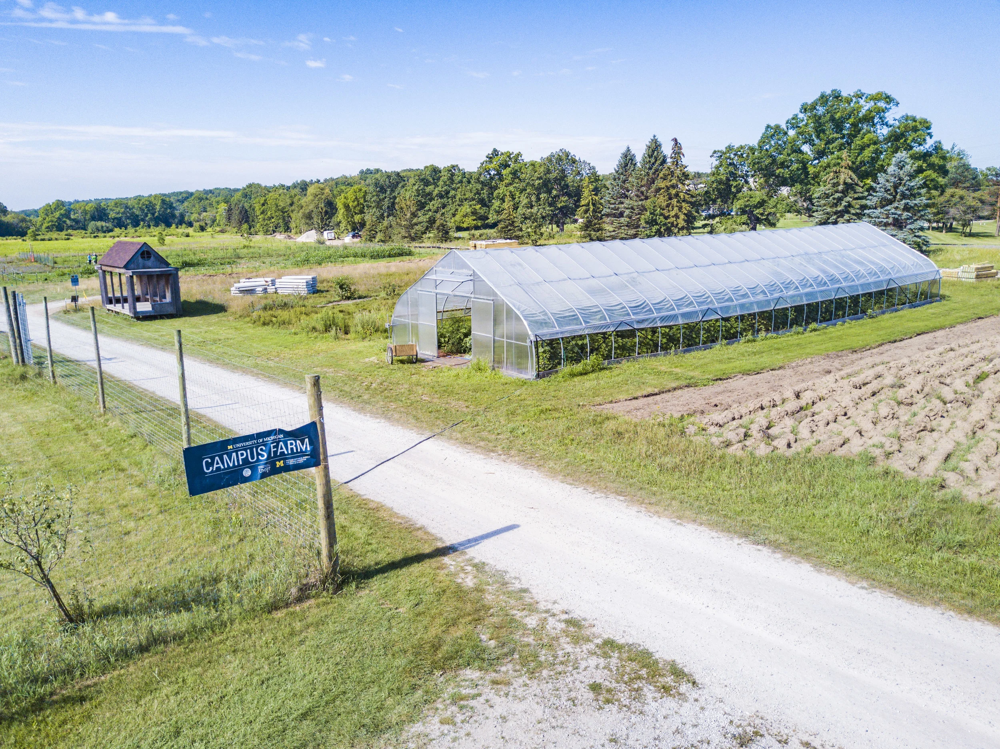

Overview
The U-M Campus Farm is a learning community at the University of Michigan that fosters leadership development, inclusion, food justice, and carbon neutrality centered around food grown by students for students. The farm grows food for the dining hall, the Maize and Blue Cupboard, and the campus farm stand. The campus farm spans 10 acres with 3 acres in production.

Farm as an Ecological System
The UM Campus Farm prioritizes the idea of famrs as ecological systems. Farms that grow a variety of crops and incorporate plants, animals, insects, soil organisms, and other parts of the environment can function as healthier ecosystems in which different organisms interact and support each other. Thinking of farms as ecosystems can shift the focus away from mass production at all costs and toward maintaining healthy relationships between crops, soil, animals, and other organisms. This approach can also help farmers use natural processes, such as biodiversity and healthy soil, to support crop growth while reducing environmental harm.
Sources and Supporting Materials
Lecture 1, Campus Farm Website